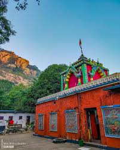

Religious Sites

Budhi Thakurani Temple
A temple in Bada Bazar that's been around for over 2 centuries.

Mahuri Kalua Temple
A temple on top of the Kerandi mountains that's believed to have helped kings fight the British.
Markandi Beach
A beach with a temple that blends Telugu and Odia architecture.